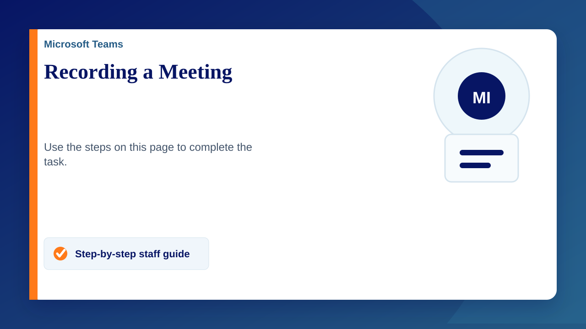

Record a Teams Meeting
- Join the meeting
- click on the "More Actions" icon (three dots) in the control bar.
- Select "Start Recording". (All participants will be notified that recording has started)
- To stop recording, click "More Actions" again and select "Stop Recording".
After the meeting ends, the recording will be processed. You'll receive a notification in the meeting chat when it's ready